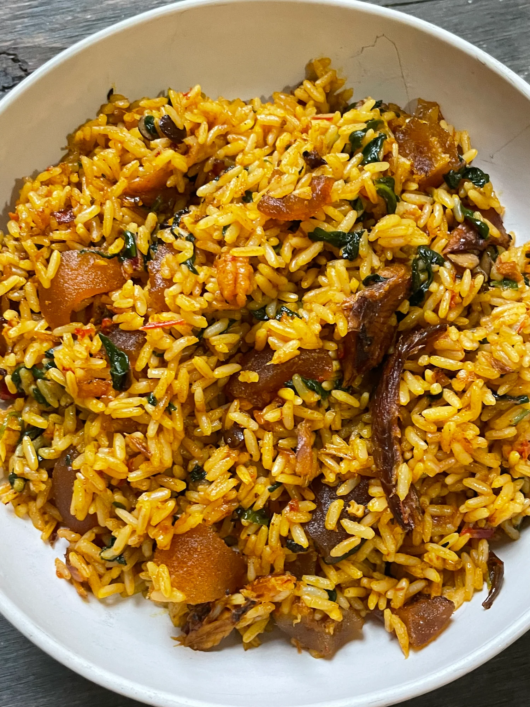

Nigerian Native Jollof Rice
April 30, 2026
Easy and Quick Recipe for Nigerian Native Rice
About
“Native”
Rice originates from Nigeria, but it differs from the traditional Nigerian Jollof Rice in the type of oil used and some of its other ingredients.
Native Rice is also known as
Iwuk Edesi
. This name comes from the Efik people in Southeastern Nigeria. It is made with palm oil instead of vegetable oil.
It also usually includes more local ingredients like fermented locust beans (Iru), Ugu (pumpkin leaves), spinach or basil (Efinrin), and dried or smoked seafood.

What You Need to Make Native Jollof Rice
Prep Time: 15 minutes
Cook Time: 45 minutes
Total Time: 1 hour
Servings: 6-8 People
Difficulty: Easy
Ingredients
- 2 cups long grain rice, rinsed
- 4 cups of chicken stock
- ¼ teaspoon of sea salt
- 2 cups roughly blended pepper mix
- 1 tablespoon Iru (fermented locust beans)
- 1 teaspoon ground smoked prawns
- 1 tablespoon dried smoked crayfish
- 2 medium cuts of cow skin (ponmo)
- 2 medium dried smoked catfish
- ½ cup of smoked dry prawns
- 1 medium red habanero pepper, diced
- 1 medium onion, diced
- ¼ cup of palm oil
- 1 cup of fresh spinach, julienne cut
The above ingredients was gotten from this website
Instructions
- Preheat the oven to 350 degrees.
- In a saucepan over medium heat, add the palm oil and let it heat for 3 minutes. Add the diced onion and the Iru (fermented locust beans). Saute until the onion becomes translucent and fragrant, about 3 minutes.
- Add the pepper mix, ground smoked prawns, dried smoked crayfish, rehydrated smoked fish, smoked prawns, habanero pepper, and cow skin. Cook for another 5 minutes.
- Add the chicken stock, cover the pot, and allow the mixture to come to a boil. Taste for salt and adjust if needed.
- Add the rinsed rice and cook for about 15 minutes until it returns to a rolling boil.
- Transfer the pot to the preheated oven and cook for another 20 minutes.
- Remove the pot, add the spinach, and stir into the rice.
- Return the pot to the oven and cook for another 10 minutes until all the liquid has been absorbed.
- Serve hot and enjoy!
Tips / Notes
This meal tastes best when eaten fresh on the same day it is prepared. Cooling and reheating later may reduce the rich native flavor and texture.
If you are using frozen spinach, allow it to thaw completely and squeeze out excess water before adding it to the rice. To soften dried smoked catfish and prawns, place them in separate bowls and pour hot boiling water over them. Cover and leave them to soak for about 30 minutes until tender.
Drain the water, rinse with clean cold water, and use for cooking. You may leave the prawn shells on or remove them depending on your preference, as they soften further during cooking.
Nutrition Facts
This dish contains carbohydrates from rice, protein from fish and prawns, vitamins from spinach, and healthy local flavor from palm oil and spices.